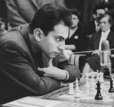
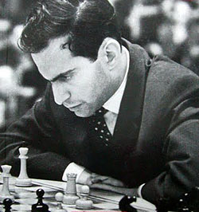

|  |  |
| Mikhail Tal | and his hypnotic stare |
pgn annotated games of Tal Memorial
Mikhail Tal lived from 9 xi 1936 until 28
vi 1992. He had become world champion in his great attacking
style. A memorial tournament was held in his hometown Riga from
12 until 24 iv 1995.
A new Tal Memorial was played in Moscow's
Central Chess Club from 6 until 16 xi 2006. The prize fund was
$100,000. It became the start of an annual event. Top-twenty
players participated mostly.
Winners Tal Memorial:
Riga 1995 (0): Kasparov
Moscow 2006 (1): Leko
Moscow 2007 (2): Kramnik
Moscow 2008 (3): Ivanchuk
Moscow 2009 (4): Kramnik
Moscow 2010 (5): Aronian and Karjakin
Moscow 2011 (6): Carlsen
Moscow 2012 (7): Carlsen
Moscow 2013 (8): Gelfand
 |
Go to home page |